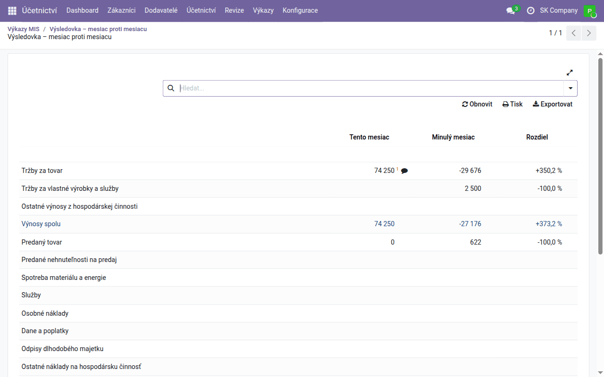
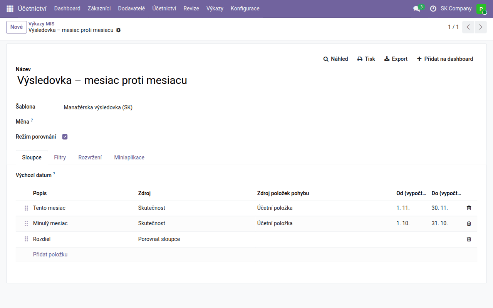
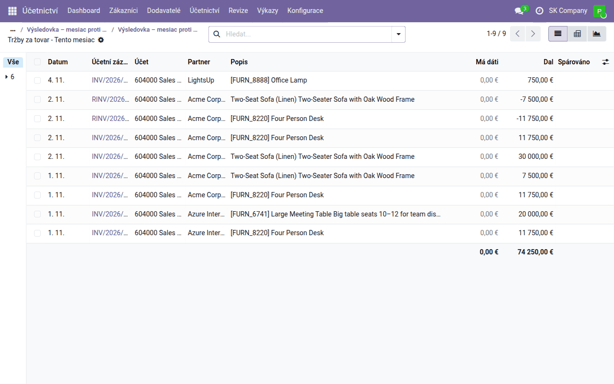
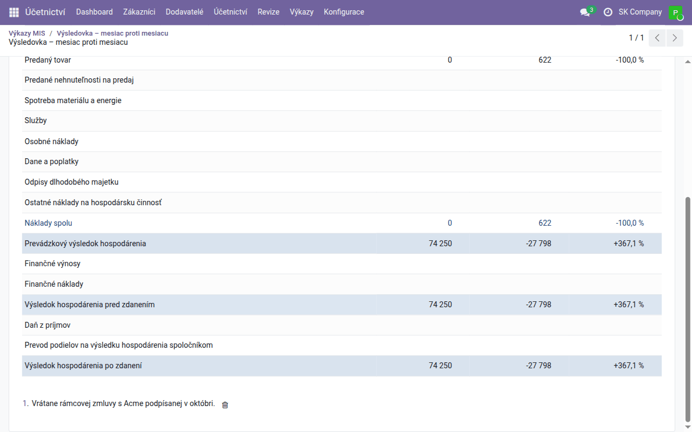
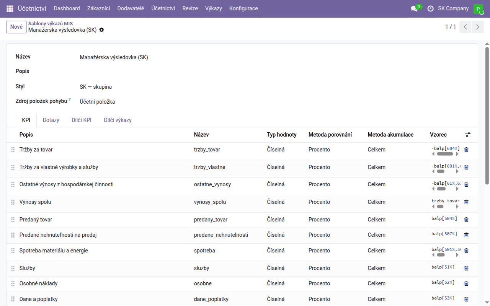

Návod k úloze
Manažerské výkazy v MIS Builder
Jak sestavit, spustit, porovnat, rozkliknout a okomentovat manažerský výkaz — manažerskou výsledovku, přehled pro vedení nebo vlastní výkaz.
| Země | Česko a Slovensko |
|---|---|
| Edice | Odoo Community |
| Zahrnuje | mis_builder, l10n_sk_mis_reports, l10n_cssk_mis_executive_summary, mis_builder_kpi_details, mis_builder_column_breakdown, mis_builder_annotation_icon, board |
K čemu slouží
Odoo Community nemá vlastní manažerské výkazy: menu Výkazy nabízí statutární výkazy a knihy, ne manažerskou výsledovku s tímto měsícem proti minulému. Tuto mezeru vyplňuje OCA modul MIS Builder. MIS výkaz je tabulka: řádky jsou ukazatele, které si definujete (tržby, hrubá marže, doba obratu pohledávek…) a sloupce jsou období, která si zvolíte (měsíc, rok, letošek proti loňsku).
MIS výkaz je pohled pro vedení. Není to rozvaha ani výkaz zisku a ztráty, které se podávají s účetní závěrkou — ty vytvářejí moduly statutárních výkazů podle řádků oficiálního formuláře. Nesnažte se tyto dva výkazy odsouhlasit řádek po řádku.
Dvě věci: šablona a výkaz
| Co obsahuje | Kde | |
|---|---|---|
| Šablona | řádky: každý ukazatel, jeho vzorec a styl. Bez dat. | Účetnictví → Konfigurace → Výkaznictví MIS → Šablony výkazů MIS |
| Výkaz | šablona + období + filtry. Ten otevíráte, tisknete a exportujete. | Účetnictví → Výkazy → Výkaznictví MIS → Výkazy MIS |
Jedna šablona může sloužit více výkazům: stejná manažerská výsledovka jako měsíční výkaz, výkaz od začátku roku a porovnání dvou let.
Co smí uživatel dělat, určuje jeho role v Účetnictví (Nastavení → Uživatelé a společnosti → Uživatelé, záložka Přístupová práva): role Pouze pro čtení a vyšší otevře výkazy MIS a účetní zápisy za číslem; vytvářet výkazy a měnit šablony smí role Hlavní účetní.
Šablony, které už máte
- Executive Summary (CZ/SK) — jedna strana s penězi, tržbami a maržemi,
dobou obratu pohledávek a závazků, běžnou likviditou a rentabilitou aktiv
z modulu
l10n_cssk_mis_executive_summary. - Manažérska výsledovka (SK) — manažerská výsledovka na slovenské
účtové osnově z modulu
l10n_sk_mis_reports. Pro českou osnovu zatím obdobná šablona není.
Obě jsou běžné šablony: otevřete je, změňte vzorec, přidejte řádek. Vaše změny aktualizace modulu nepřepíše.
Spuštění výkazu
- Otevřete Účetnictví → Výkazy → Výkaznictví MIS → Výkazy MIS a klikněte na Nové.
- Zadejte Název a vyberte Šablonu.
- Pro jedno období nechte Režim porovnání vypnutý a vyplňte Od a Do (nebo vyberte Rozmezí datumů).
- Klikněte na Náhled. Výkaz se otevře v prohlížeči; Tisk vytvoří PDF, Export soubor Excel.

Ve výchozím stavu se počítají jen zaúčtované doklady (Cílové zápisy: Všechny zaúčtované zápisy). Na záložce Filtry přepnete na Všechny zápisy (včetně konceptů) a omezíte výkaz na analytický účet nebo jinou podmínku na účetních zápisech (Analytická doména). Při více společnostech můžete vykazovat i více společností najednou (Více společností).
Porovnání období
Zaškrtněte Režim porovnání a objeví se záložka Sloupce. Každý řádek je jeden sloupec (Zdroj a Režim nastavíte v okně řádku):
- Skutečnost s režimem Pevná data — období, které zadáte ručně.
- Skutečnost s režimem Relativně k výchozímu datu výkazu — období počítané od Výchozího data výkazu (prázdné = dnes): Typ období den, týden, měsíc, rok nebo rozmezí z číselníku, Posun (0 = aktuální, −1 = předchozí) a Počet období. Od začátku roku ho prodlouží zpět k 1. lednu. Výkaz „tento měsíc / minulý měsíc“ tak platí i příští měsíc bez jakékoli úpravy.
- Porovnat sloupce — změna mezi dvěma jinými sloupci, u částek v procentech.
- Součtové sloupce — součet (nebo rozdíl) jiných sloupců, například čtvrtletí ze tří měsíců.
Příklad: Tento měsíc (relativně, měsíc, posun 0), Minulý měsíc (relativně, měsíc, posun −1) a Rozdíl (porovnat sloupce Minulý měsíc a Tento měsíc).

Chcete-li jeden sloupec rozdělit na sloupec za každý deník, partnera nebo
společnost a za nimi součet, viz
mis_builder_column_breakdown.
Čtení výkazu
- Klikněte na číslo a otevřou se účetní zápisy, ze kterých vzniklo, už vyfiltrované na daný řádek a sloupec. Tam je můžete seskupit, filtrovat a otevřít každý doklad.
- Najeďte myší na číslo a uvidíte vzorec, ze kterého se počítalo.
- Vyhledávání nad výkazem zúží všechna čísla najednou: napište partnera, účet nebo deník, nebo použijte Vlastní filtr… pro jakoukoli jinou podmínku. Uložit aktuální filtr filtr uloží mezi Oblíbené výkazu.
- Rozbalení řádku po účtech — nebo s modulem
mis_builder_kpi_detailspo partnerech, produktech, denících, měsících či podle jiného pole — tam, kde to šablona pro řádek zapíná.

Poznámky k číslům
Ke každému číslu můžete připojit poznámku, například „včetně rámcové smlouvy podepsané v říjnu“:
- Najeďte myší na řádek: u každého čísla, ke kterému lze poznámku připojit, se objeví ikona poznámky. Klikněte na ni a napište poznámku.
- Číslo s poznámkou má stále vyplněnou ikonu a číslo poznámky pod čarou; poznámky jsou vypsány pod výkazem a vytisknou se do PDF i do exportu do Excelu.
- Kliknutím na vyplněnou ikonu poznámku změníte; smažete ji v seznamu pod výkazem.

Kdo smí poznámky vidět a psát, je právo uživatele: Nastavení → Uživatelé a společnosti → Uživatelé, otevřete uživatele (se zapnutým vývojářským režimem), záložka Přístupová práva, sekce EXTRA PRÁVA — Výkaz MIS: zobrazení poznámek nebo Výkaz MIS: přidávání poznámek. Administrátor má obě. K řádkům rozbaleným po účtech poznámku připojit nelze.
Samotnou ikonu poznámky přidává modul
mis_builder_annotation_icon;
nahrazuje rozbalovací šipku z OCA, která vypadala, jako by šel řádek
rozbalit.
Výkaz na dashboardu
Tlačítko Přidat na dashboard na výkazu ho umístí na Dashboardy → Můj dashboard, kde se obnoví při každém otevření.
Úprava šablony
Šablonu otevřete v Účetnictví → Konfigurace → Výkaznictví MIS → Šablony výkazů MIS. Každý řádek na záložce KPI má Název (technický, používá se v jiných vzorcích), Popis (co výkaz zobrazí) a Vzorec:
| Vzorec | Znamená |
|---|---|
balp[604%] |
zůstatek účtů začínajících na 604, pohyby za období |
bale[211%] |
zůstatek ke konci období (peníze, závazky…) |
bali[211%] |
zůstatek k začátku období |
crdp[6%], debp[5%] |
jen pohyby na straně Dal nebo Má dáti |
-balp[6%] |
výnosy kladně (zůstatky na straně Dal jsou záporné) |
trzby - naklady |
řádek vypočtený z jiných řádků podle jejich názvů |

Název řádku nesmí začínat na bal, crd, deb ani jinou předponu
vzorce: MIS Builder je přepisuje jako text a každý řádek, který se na něj
odkazuje, ukáže #ERR. Pojmenujte ho trida_54_55, ne bal_54_55.
Řádky se zobrazují podle Stylu šablony a vlastního stylu řádku (tučné součty, skryté pomocné řádky, počet desetinných míst). Styly jsou v Účetnictví → Konfigurace → Výkaznictví MIS → Styly výkazů MIS.
Když něco nesedí
| Vidíte | Podívejte se na |
|---|---|
| Prázdný výkaz | společnost na záložce Filtry a zda jsou doklady zaúčtované |
#ERR v řádku |
najeďte na něj myší, zobrazí se chyba; obvykle překlep v názvu řádku nebo název začínající předponou vzorce |
| Číslo nesedí s hlavní knihou | data sloupce a Cílové zápisy; klikněte na číslo a uvidíte přesně, které zápisy počítá |
| Sloupec na záložce Sloupce je červený | má neúplná data: relativní sloupec potřebuje Typ období |